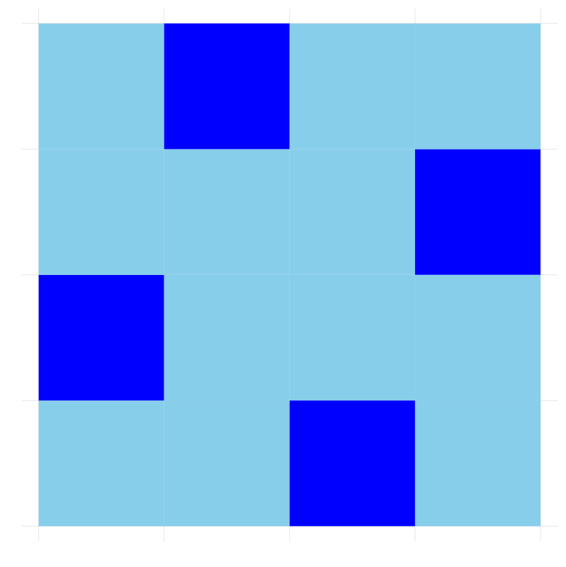
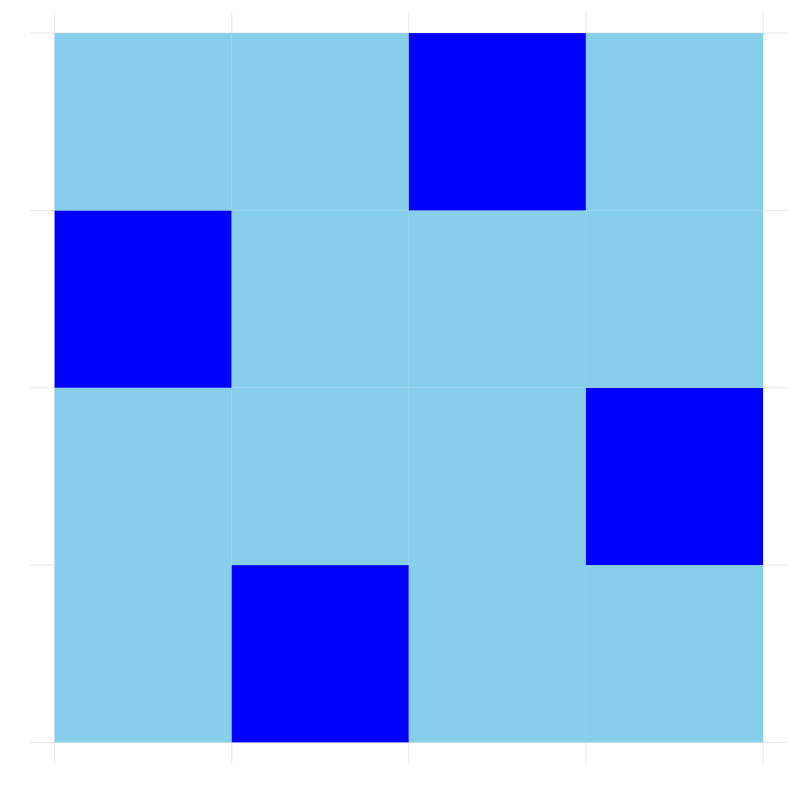
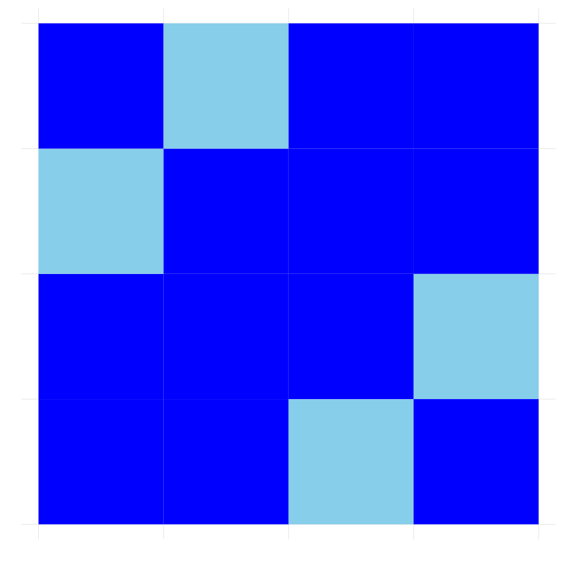
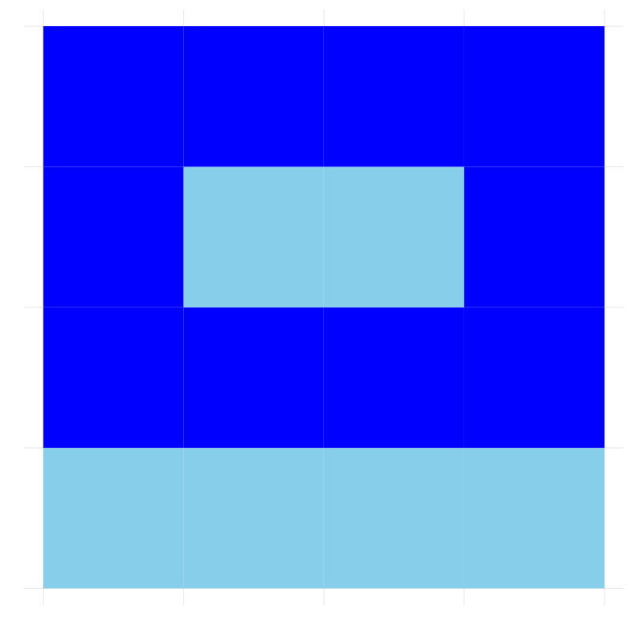
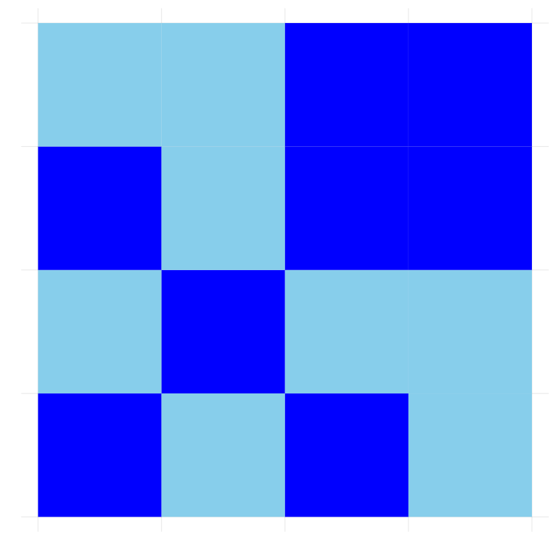
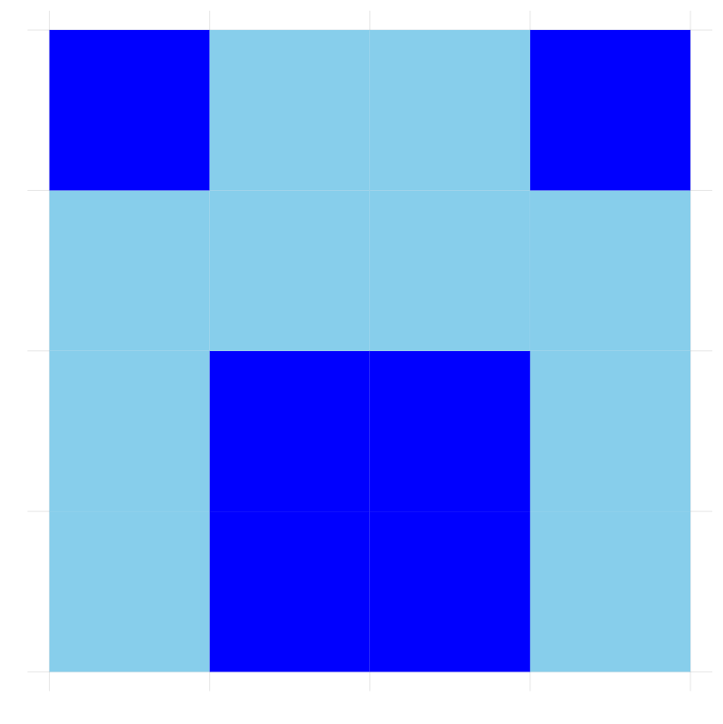

有限体\({\mathbb F}_2=\{\bar{0},\bar{1}\}\)
- 足し算 （通常の足し算を\(2\)で割ったあまり）
|
\(+\)
|
\(\bar{0}\)
|
\(\bar{1}\)
|
|
\(\bar{0}\)
|
\(\bar{0}\)
|
\(\bar{1}\)
|
|
\(\bar{1}\)
|
\(\bar{1}\)
|
\({\color{red}{\bar{0}}}\)
|
\[
\bar{0} + \bar{1} = \bar{1},~~~ \bar{1} + \bar{1} = \bar{0}
\]
- かけ算
|
\(\times\)
|
\(\bar{0}\)
|
\(\bar{1}\)
|
|
\(\bar{0}\)
|
\(\bar{0}\)
|
\(\bar{0}\)
|
|
\(\bar{1}\)
|
\(\bar{0}\)
|
\(\bar{1}\)
|
基本的な性質
- \(a + b = b + a,~~~\) \(a\times b = b\times a~~\) (交換法則)
- \(a + (b + c) = (a + b ) + c~~\) (結合法則)
- \(a \times (b \times c) = (a \times b ) \times c\)
- \(a\times(b + c) = a\times b + a\times c~~\) (分配法則)
ベクトル
\(n\)次元ベクトル \[
\overrightarrow{a}=\begin{pmatrix}a_1\\a_2\\\vdots\\a_n\end{pmatrix}
\] \(\{\bar{0},\bar{1}\}\)の元を\(n\)個並べたもの
ベクトルの足し算
\[
\overrightarrow{a}=\begin{pmatrix}a_1\\a_2\\\vdots\\a_n\end{pmatrix},
~~
\overrightarrow{b}=\begin{pmatrix}b_1\\b_2\\\vdots\\b_n\end{pmatrix}
\]
\[
\overrightarrow{a} + \overrightarrow{b}
=
\begin{pmatrix}a_1\\a_2\\\vdots\\a_n\end{pmatrix}+\begin{pmatrix}b_1\\b_2\\\vdots\\b_n\end{pmatrix}
=\begin{pmatrix}a_1 + b_1\\a_2 + b_2\\\vdots\\a_n + b_n\end{pmatrix}
\]
ベクトルのスカラー倍
\[
c \in \{\bar{0},\bar{1}\},~~ \overrightarrow{a}=\begin{pmatrix}a_1\\a_2\\\vdots\\a_n\end{pmatrix},
\] \[
c\overrightarrow{a} = c\begin{pmatrix}a_1\\a_2\\\vdots\\a_n\end{pmatrix}
=\begin{pmatrix}ca_1\\ca_2\\\vdots\\ca_n\end{pmatrix}
\]
1次方程式
- \(x + \bar{1} = \bar{1}\)
- \(~~~~~~~~~~~\Longrightarrow (x + \bar{1}) + \bar{1} = \bar{1} + \bar{1}\) (両辺に\(\bar{1}\)を加えた)
- \(~~~~~~~~~~~\Longrightarrow x + (\bar{1} + \bar{1}) = \bar{0}\) (結合法則)
- \(~~~~~~~~~~~\Longrightarrow x + \bar{0} = \bar{0}\)
- \(~~~~~~~~~~~\Longrightarrow x = \bar{0}\)
- 問: 方程式 \(x + \bar{1} = \bar{0}\) を解け
2元連立方程式
- \(\left\{ \begin{array}{cccc} x & + & y & = & \bar{1}\\ & & y & = & \bar{1} \end{array} \right.\)
- \(~~~~~~~~~~~\Longrightarrow x = \bar{0},~~ y = \bar{1}\)
- \(x\begin{pmatrix}\bar{1}\\\bar{0}\end{pmatrix}+y\begin{pmatrix}\bar{1}\\\bar{1}\end{pmatrix}=\begin{pmatrix}\bar{1}\\\bar{1}\end{pmatrix}~~~~\) ベクトルによる表現
\({\mathbb F}_2\)によるon-offの表現
\(\bar{1}:\) ライトがオン
\(\bar{0}:\) ライトがオフ
\[
\bar{0} + \bar{1} = \bar{1},~~~ \bar{1} + \bar{1} = \bar{0}
\]
\(\bar{1}\)を足すことはon-off反転
連立方程式
- \({\mathbf S}:\) on-offの初期状態を表すベクトル
- \({\mathbf v}_i:\) タイル\(i\)を押すことによる変化を表すベクトル
- \(x_i:\) タイル\(i\)を押すか押さないか \[
x_i =
\begin{cases}
\bar{1} & 押す\\
\bar{0} & 押さない
\end{cases}
\]
- 連立方程式: \[{\mathbf S} + x_1{\mathbf v}_1 + x_2{\mathbf v}_2 + \cdots + x_n{\mathbf v}_n=\bar{0}\]
\[{x_1{\mathbf v}_1 + x_2{\mathbf v}_2 + \cdots + x_n{\mathbf v}_n=-{\mathbf S}}\]
例(2x2)
- \(\begin{array}{c}\color{blue}{\mathtt 1}\\\color{blue}{\mathtt 2}\\\color{blue}{\mathtt 3}\\\color{blue}{\mathtt 4}\end{array}~~x\begin{pmatrix}1\\\bar{1}\\\bar{1}\\0\end{pmatrix}+y\begin{pmatrix}\bar{1}\\\bar{1}\\\bar{0}\\\bar{1}\end{pmatrix}+z\begin{pmatrix}\bar{1}\\\bar{0}\\\bar{1}\\\bar{1}\end{pmatrix}+w\begin{pmatrix}\bar{0}\\\bar{1}\\\bar{1}\\\bar{1}\end{pmatrix}=\begin{pmatrix}\bar{1}\\\bar{1}\\\bar{1}\\\bar{1}\end{pmatrix}\)
- \(\left\{\begin{array}{ccccccccc}x & + & y & + & z & & & = & \bar{1}\\ x & + & y & & & + & w & = & \bar{1}\\ x & & & + & z & + & w & = & \bar{1}\\ & & y & + & z & + & w & = & \bar{1}\\\end{array}\right.\)
いつでも解けるわけではない
- \(\left\{\begin{array}{ccccc}x & + & y & = & \bar{1}\\ x & + & y & = & \bar{0}\end{array}\right.\)
ラプラシアンとその階数
タイル(ライト)が\(n\)枚
- \(\bullet\) ベクトル\(\overrightarrow{v}_i\)を並べたもの \[
L = (\overrightarrow{v}_1, \overrightarrow{v}_2, \ldots, \overrightarrow{v}_n)
\] をラプラシアンと呼ぶ。
- \(\bullet\) 解ける初期配置の個数はある整数\(r\)によって\(2^r\)個と表される。
- \(\bullet\) \(r\)を\(L\)の階数と呼ぶ。\(n-r\)を余階数と呼ぶことにする。
- \(\bullet\) 可解なとき、解の個数は\(2^{n-r}\)個ある。
例(４ｘ４の場合の解)
\(n=4^2=16\)で階数\(r=12\). よって余階数\(n-r=4\)
解ける初期配置に対して\(2^{余階数} = 16\)通りの解がある。
 \(\times 1~~\)  \(\times 1\)
 \(\times 2\)
 \(\times 4~~\)  \(\times 4~~\)  \(\times 4\)